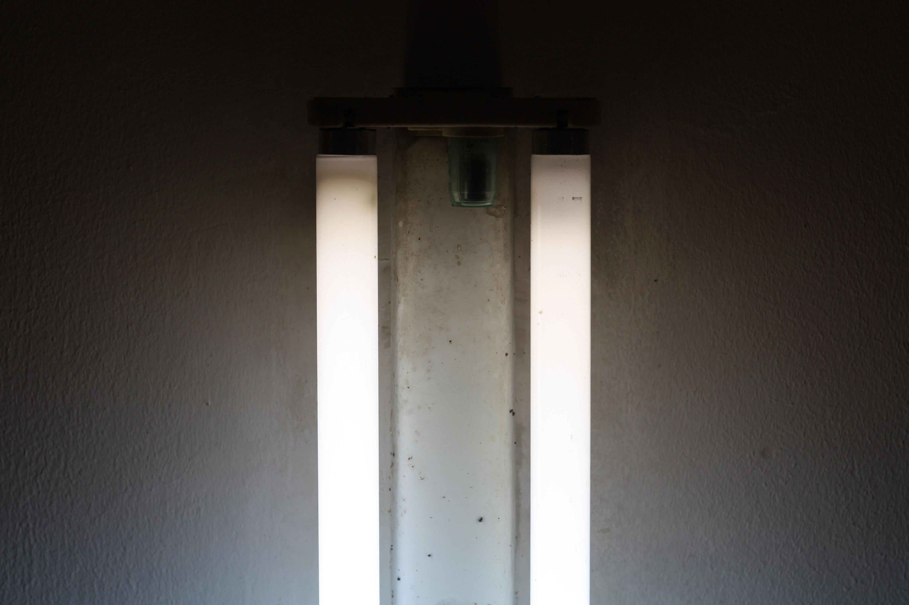
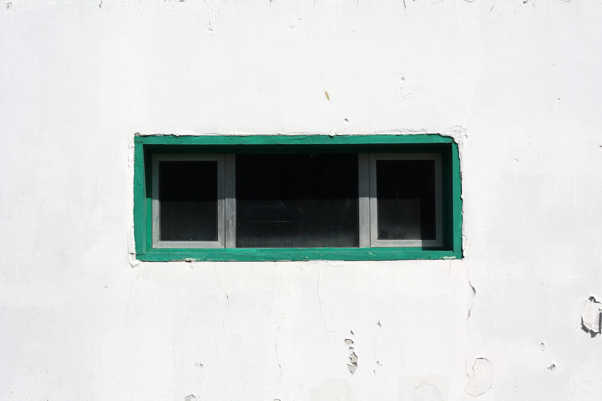
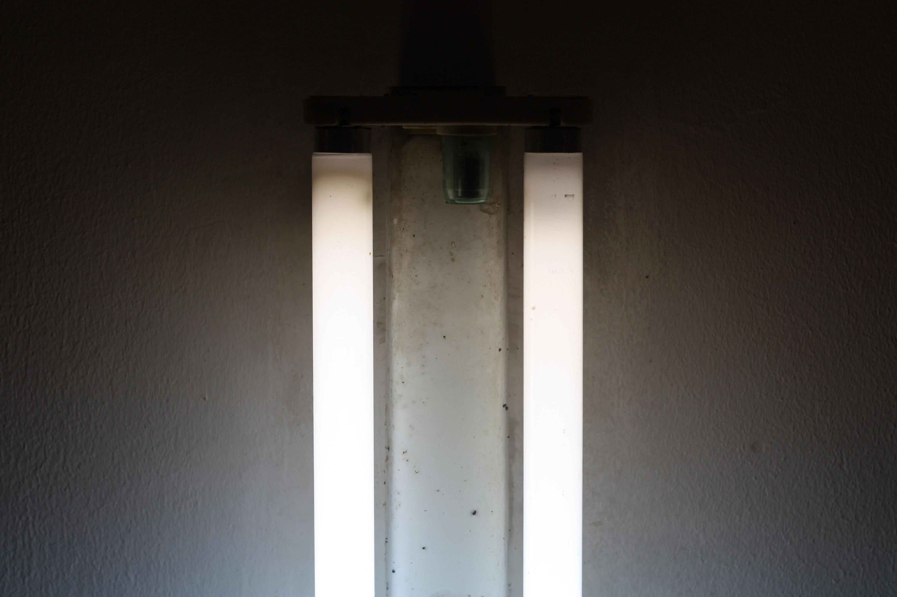
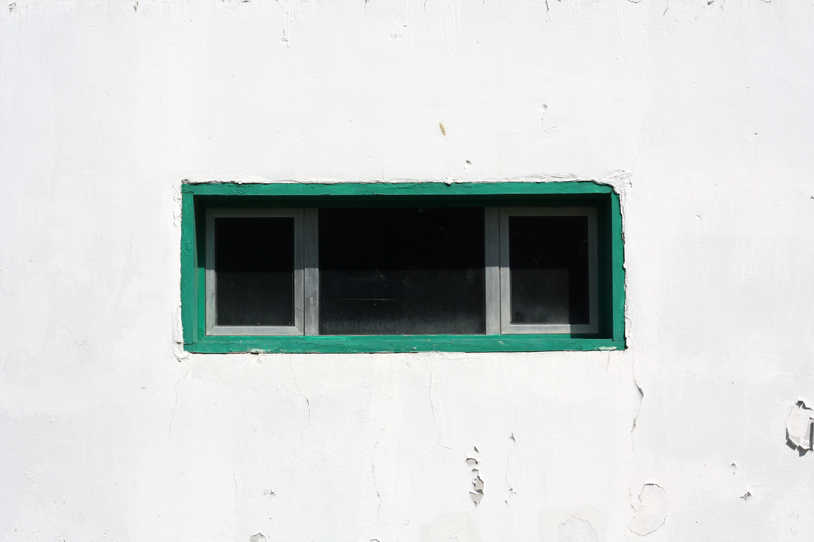
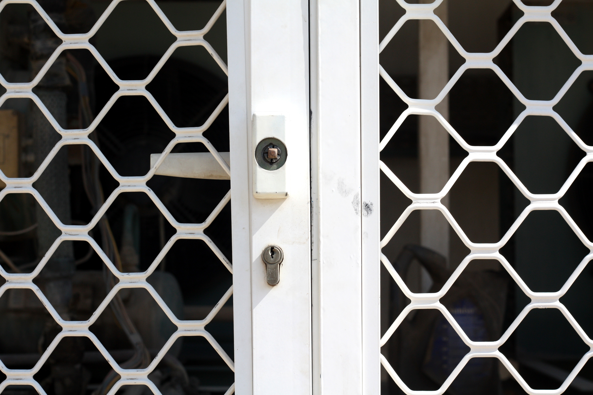
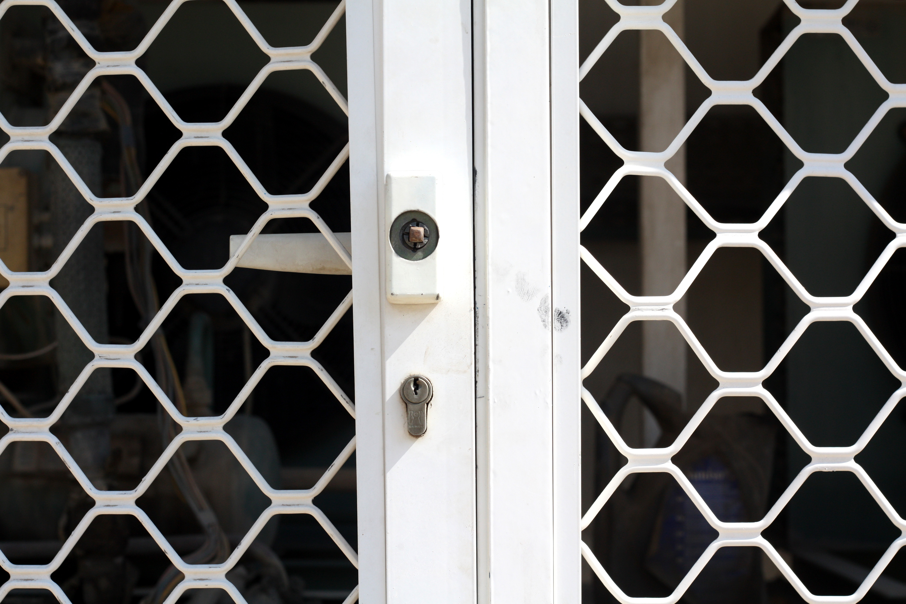

Learning Abu Dhabi represents a synthesis of four years of living in and exploring the place I have come to think of as a home. It seeks to document my process of learning from the city, a process of trying to understand why things are the way they are, and how they came to be. It is an exploration into how urban spaces impart knowledge to their inhabitants, and how cities can tell us stories about the people that design and call them home. Abu Dhabi contains a wealth of fascinating experiments in architecture and urban planning that mirror the wills and desires of a burgeoning nation state. Through a series of photographs and essays, I hope to reveal the city as a globally unique urban environment, one that offers an insight into the many translations and interpretations of (post)modernity in the Gulf, and thus worthy of artistic and scholarly interest.
Learning Abu Dhabi
SITE CURRENTLY UNDER CONSTRUCTION
THE PROJECT SO FAR...
Learning Abu Dhabi is a photographic research project by Finn Murray-Jones. It began life as his senior thesis project at New York University Abu Dhabi. The outcome of this first year's research is now available as a book, which can be read online here.
 




 
